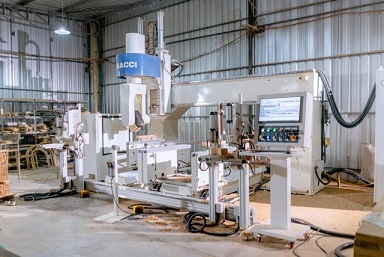
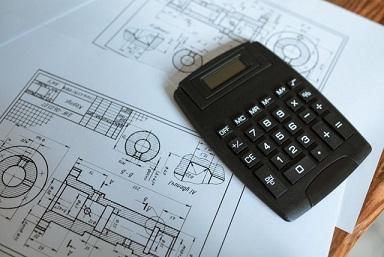
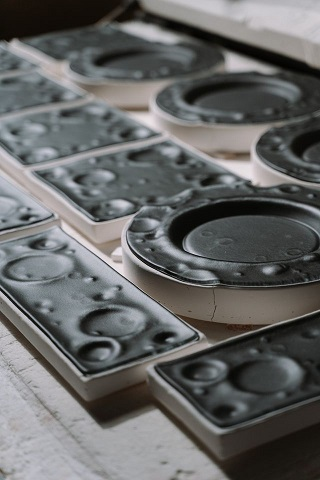
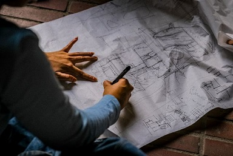
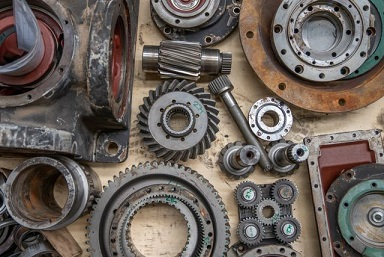
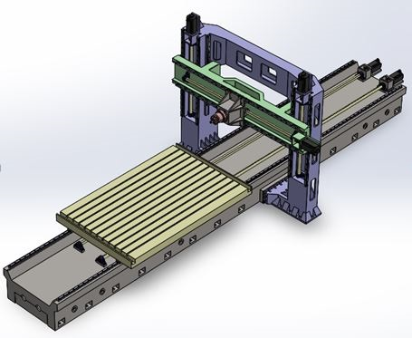
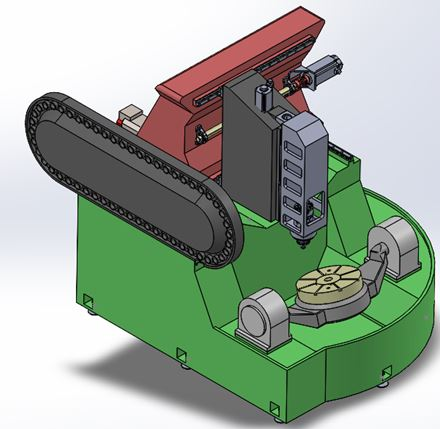
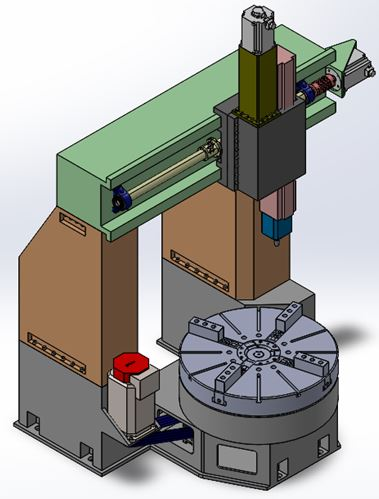
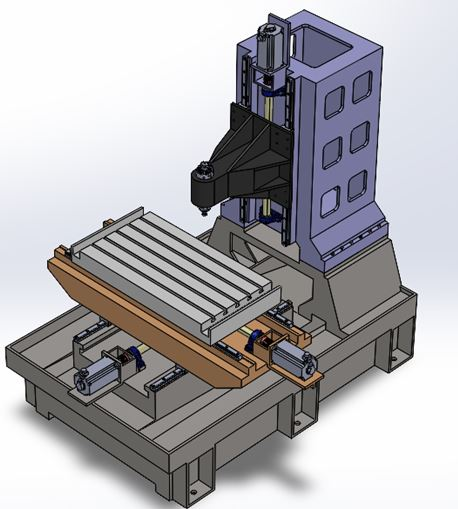

Complete Design Solutions for All Type of Machines
Complete Design, Analysis, Modelling and Detailing Solutions for All Types of Machines,
Assemblies and Parts involved in Machine Manufacturing, Automobile,
Aerospace& Marine Industries.
Why to hire a full time design engineer if you need design services occasionally....
Just try our fast, cheap and accurate design services....
Services Provided

# Complete Design of All types of Industrial Machines such as Light/Medium/Heavy Duty CNC Lathes,
CNC Roll Turning Lathes, Vertical Turning Lathes, Vertical Machining Centers with
Multiple Axes/Gantry type/Single/Double Column, Special Purpose Machines,
Hydraulic Press Machines, Injection Molding Machine, Die Casting Machine,
Industrial Robot Arms, Conveyors, Cranes, Pumps, Compressors, Heat Exchangers, Tanks etc

# Design and Detailing of industrial machine assemblies and parts such as Brake Disk assembly,
Spindle Assembly, X/Y/Z Feed Assembly, Tailstock Assembly, Hydraulic and Pneumatic Cylinders,
Weldments, Castings, Injection Molds, Plastic Parts, Engine Blocks, Gearboxes, Automobile,
Aeronautical and Marine Parts and Assemblies etc

# Design of Molds for Injection Molding Plastic Parts

# Concept Generation and Preliminary Design

# Selection of Machine Components such as Linear Guideways, Ball Screws, Servo Motors,
Precision Gearboxes, Hydraulic/Pneumatic Cylinders, Bearings, Chucks, O rings/Quadrings,
Sealsetc
# Layout Generation and Detailing
# Creation of Ultimate Machine Body Structure using FEM Analysis
# Assembly Modelling and Detailing with Bill of Materials
# Creation of Realistic Rendered Photos of parts and Products for catalogues
# Creating Casting 3D Model for Machine Castings, CAD Models for Metal and Plastic 3D Printing
# Creation of Fabrication, Weldment, Casting, Machining Drawing for Production
# 2D to 3D Modelling, Rendering
# PDF/Hand Rough Sketch to AutoCAD Drawing conversion
The Portfolio of Some of the Projects We have completed earlier is attached below….
Double Gantry Type Horizontal Machining Center

5thAxis CNC Machine

CNC Vertical Turning Lathe

CNC Vertical Machining Center

Frequently Asked Questions
What types of industrial machines do you design?
Susilya provides turnkey design solutions for light, medium, and heavy-duty industrial machinery. Our expertise includes multi-axis and gantry-type CNC lathes, vertical turning lathes, vertical machining centers (VMCs), special purpose machines (SPMs), hydraulic presses, injection molding equipment, industrial robot arms, conveyors, cranes, and heat exchangers.
Do you provide design services for specific machine components?
Yes. We engineer detailed machine assemblies and individual parts. Our design portfolio covers spindle assemblies, X/Y/Z feed systems, tailstocks, gearboxes, brake disks, hydraulic or pneumatic cylinders, weldments, castings, injection molds, and specialized automotive, aeronautical, and marine engineering components.
How do you handle engineering component selection and analysis?
We optimize machine integrity using finite element method (FEM) structural analysis to create robust machine bodies. Our team accurately selects critical industrial components, including linear guideways, ball screws, servo motors, precision gearboxes, heavy-duty bearings, custom chucks, and reliable O-rings, quad-rings, or seals.
Can you convert paper sketches or 2D files into 3D models?
Yes. We offer efficient CAD conversion services, transforming PDF files and hand-drawn rough sketches into accurate AutoCAD drawings. We specialize in 2D to 3D modeling, assembly modeling with detailed bills of materials (BOM), and creating casting or 3D printing models for manufacturing production.
Why should my company outsource mechanical engineering design to Susilya?
Outsourcing eliminates the overhead costs of maintaining full-time design engineers for occasional projects. Susilya delivers fast, highly accurate, and budget-friendly design services on demand, supplying your business with production-ready fabrication drawings, realistic rendered marketing photos, and high-quality catalog assets.